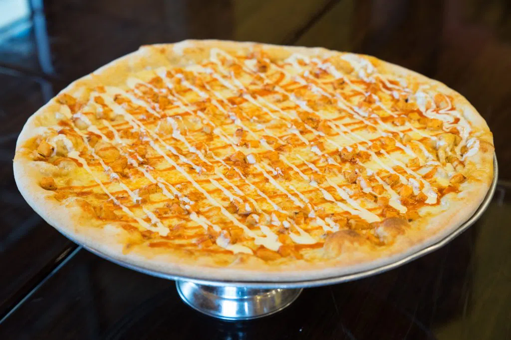
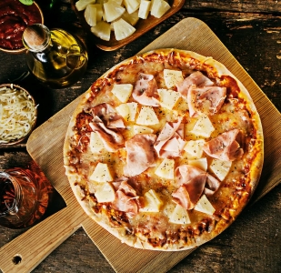
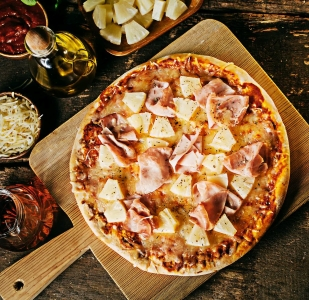

Buffalo-Pizza
Buffalo pizza is a delicious and flavorful variation of traditional pizza that incorporates the tangy and spicy flavors of Buffalo sauce. It's a perfect choice for those who enjoy the combination of spicy heat and cheesy goodness.Buffalo pizza is a great option for game nights, parties, or casual gatherings. You can also customize it further by adding additional toppings such as sliced jalapeños, diced celery, or cooked bacon.
cheess-Pizza
Cheese pizza is a classic and universally loved pizza variety that celebrates the simplicity and deliciousness of melted cheese. It is a timeless favorite that appeals to both kids and adults alike.Cheese pizza is a celebration of the gooey and melty goodness of cheese. It allows the cheese to take the spotlight, highlighting its flavor and texture as it blends with the tangy tomato sauce.
Hawaiian-Pizza
Hawaiian pizza was created by Sam Panopoulos, a Greek immigrant to Canada, in the 1960s. Panopoulos and his brothers decided to add canned pineapple to their pizzas at their restaurant in Chatham, Ontario. The combination of pineapple with ham and cheese quickly became a hit and spread to become a beloved pizza option globally.
Margherita-Pizza
Margherita pizza is a classic Italian pizza variety that features simple yet delicious flavors. It is named after Queen Margherita of Italy and was created to showcase the colors of the Italian flag—red tomatoes, white mozzarella cheese, and green basil. Margherita pizza is a true representation of Italian culinary tradition and is beloved by pizza enthusiasts worldwide. It's a perfect choice for those who appreciate the beauty of simplicity and the authentic flavors of Italian cuisine.
Pepperoni-Pizza
Pepperoni pizza is a classic and beloved pizza variety that is known for its savory and slightly spicy flavors. It is a popular choice among pizza enthusiasts and has become an iconic staple in pizzerias around the world.Pepperoni pizza is a versatile choice that appeals to a wide range of pizza lovers. It's a great option for parties, gatherings, or a quick and comforting meal any time of the week.